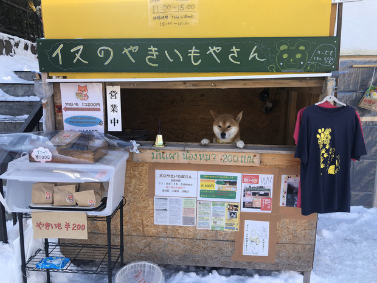
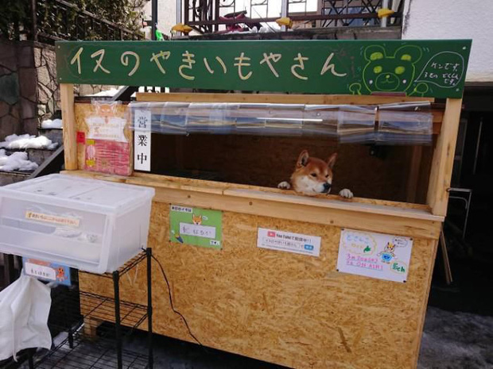
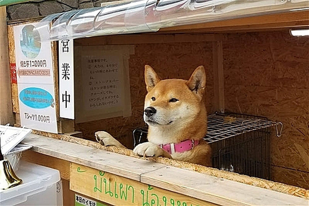
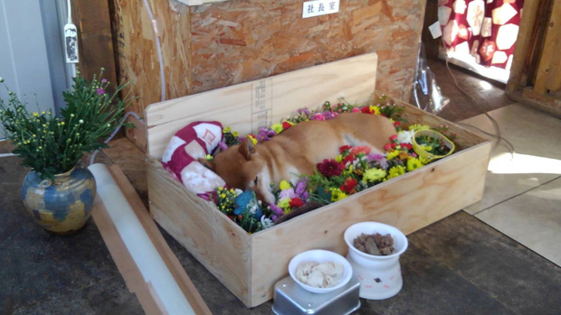
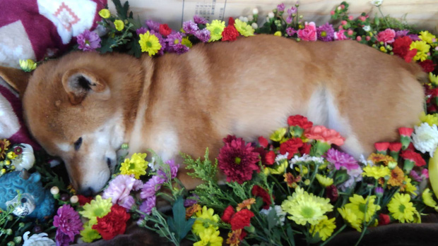
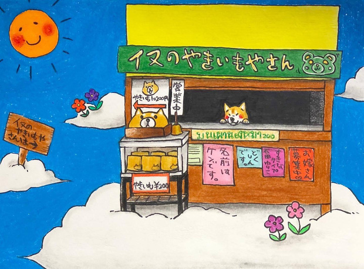

Chú chó Shiba bán khoai lang nướng từng gây bão MXH thế giới đã qua đời
lebv - ngày 26/06/2021
Được biết, Ken-kun đã chính thức qua đời vào ngày 6/6 và chủ nhân của chú từ chối tiết lộ lý do qua đời.
Chú chó Ken-kun bán khoai nướng nổi tiếng ở thành phố Sapporo (Nhật Bản) đã chính thức qua đời vào ngày 6/6 vừa qua.
Được biết, Ken-kun - chú chó thuộc giống Shiba Inu "quốc khuyển" cực kì nổi tiếng với MXH từ khoảng cách đây 2 năm trước do thường xuyên đứng quầy trông hàng hộ chủ tại quầy bán khoai lang có tên Inu no Yakiimoyasan.
  Tiệm này nằm trong một khu dân cư ở Sapporo, đảo Hokkaido phía bắc Nhật Bản. Tiệm Inu no Yakiimoyasan bắt đầu nổi tiếng khi có người đăng ảnh lên Twitter và được hàng nghìn lượt bình luận. Sau đó, mỗi ngày đều có nhiều người tìm đến tiệm.
Menu của quán chủ yếu là khoai lang nướng. Bên ngoài quầy đặt một hộp đựng khoai gói trong giấy bạc, khách hàng có thể chọn rồi sau đó trả 200 yen (42.000 đồng) vào hòm tiền. Bên cạnh đó, còn có một bảng ghi chú vô cùng đáng yêu: "Vì là chó nên em không thể trả lại tiền thừa cho mọi người đâu".
  
Thông tin chú chó Ken-kun qua đời đã chính thức được xác nhận trên tài khoản cá nhân của chủ nhân chú chó. Người này chia sẻ: "Ken qua đời lúc 12h50 ngày 6/6 và thọ 5 tuổi. Tôi chắc rằng nó đã rất vui vì được mọi người yêu mến. Cảm ơn mọi người thật nhiều".
Chủ của Ken không tiết lộ lý do chú chó này qua đời.
Nguồn: kenh14.vn